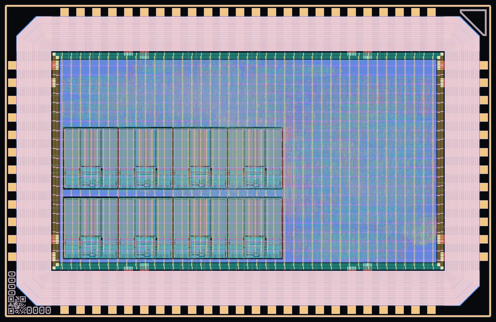

RV328
A RISC-V microcontroller in the footprint of the ATmega328PB: the same 32 pins, the same peripherals, 5 V, 20 MHz, on the open GF180MCU process. This site is the record of how it is being built: the results, the decisions and the dead ends.
Nothing here has been measured on silicon. Every figure comes from simulation or from the layout tools.

The source, the test programs and these pages are on GitHub.

Where it stands
| Half-height layout | Full-height layout | |
|---|---|---|
| What it is | digital part only, 2 KB cache | 12 KB cache, fast multiplier, the analog macro in place with its 13 analog lines wired |
| Layout | signed off: rule checks, layout-versus-schematic, antenna, density | routed without violations (run tgc2); rule checks, layout-versus-schematic and gate-level simulation with the macro not run yet |
| 20 MHz | met at all nine corners, 5.9 ns to spare | met at eight of nine corners; 0.63 ns short at the slowest one (19.75 MHz there), all on the multiplier |
| Against an ATmega328P | too slow on ordinary firmware | level on float code, 2 to 4 times faster on the rest |
| Role | kept ready as a possible test chip | the product |
Start here
- Build log: what was done at each stage and what it showed.
- Decisions: what was chosen, instead of what, and why.
- Cache study: the measurements against an ATmega328P that changed the plan.
- Layout results: every layout run, with its numbers.
- Memory research: can the memory be made denser (first report).
Reference
- Datasheet, verification, tape-out checklist
- Analog macro specification, bond-out
- Layout viewer for the half-height layout